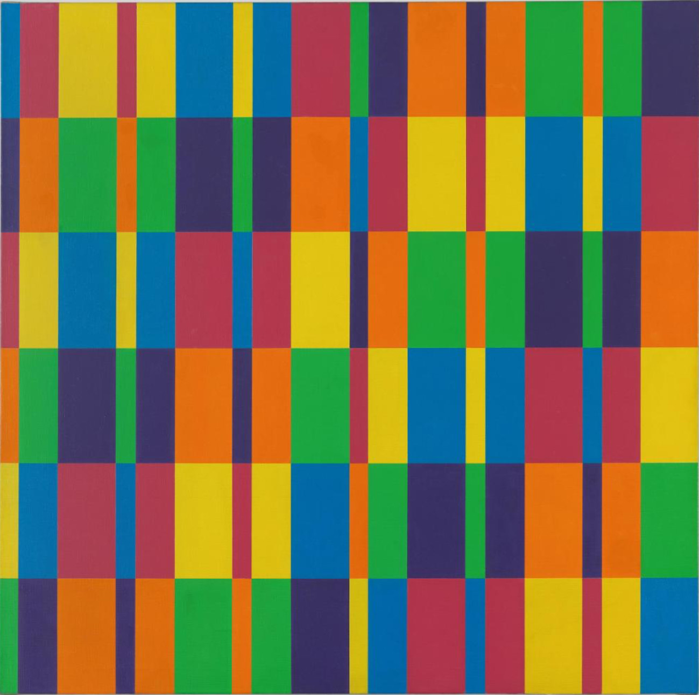

L’œuvre

Image introuvable. Placez le fichier lohse.png à côté de index.html dans le dépôt.
Sechs horizontale Bänder mit je sechs formal gleichen Farbgruppen Six bandes horizontales comportant chacune six groupes de couleurs formellement égaux
- Dates
- 1950–1969
- Technique
- Huile sur toile
- Dimensions
- 126 × 126 cm
- Acquisition
- Achat, 1977
- Inventaire
- AM 1977-569
« La forme anonyme aspire à l’infini et à l’absolu. Cette forme d’expression que l’on peut appeler, dans un sens très large, constructive, est un art démocratique. »
Membre du groupe zurichois de l’Art concret, Lohse développe à partir des années 1940 une abstraction rigoureuse fondée sur un schéma coloré strictement orthogonal. Modulaire et sérielle, l’œuvre est l’application exacte du système énoncé par son titre.
Elle appartient à une série de quatre peintures portant le même titre. Mathématique, géométrique, sérielle : le tableau n’est pas une composition inventée à l’œil, c’est une règle rendue visible. Et une règle peut être appliquée de nouveau.
Le protocole, appliqué ici
Six bandes horizontales comportant chacune six groupes de couleurs formellement égaux.
Ce carré attend une application du protocole.
À chaque application, le système tire un module (les largeurs relatives des bandes verticales d’un groupe), une gamme de six couleurs et une règle de permutation. Les six groupes de chaque bande ont toujours la même forme ; seules les couleurs circulent.